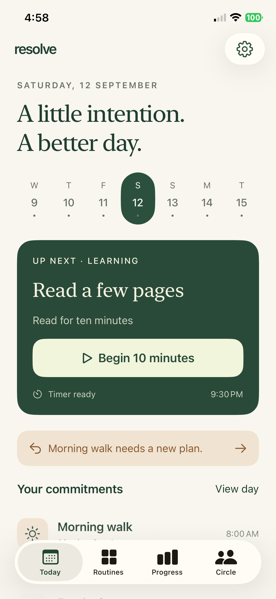

Keep a realistic routine.
Give each commitment a full version and a smaller version for difficult days. Organize routines around the obligations already in your life.
Your daily practice
Make a realistic plan. Protect a little time. When life changes, find the next step you can keep.
Native for iPhone · Preparing for the App Store

Give each commitment a full version and a smaller version for difficult days. Organize routines around the obligations already in your life.
Begin a focus session, pause when you need to, and confirm what you completed. Choose reminders and start alarms that fit your day.
Earn personal points and awards, reflect on your week, and work toward rewards you choose. Your routine details stay on your device.
Core routines work offline. Resolve has no advertising or tracking integrations. Optional private circles are designed to share aliases and aggregate scores, without revealing your routine names or schedule.
Screenshots show the current iPhone beta. Availability of online services and subscription features will be confirmed with the App Store release.